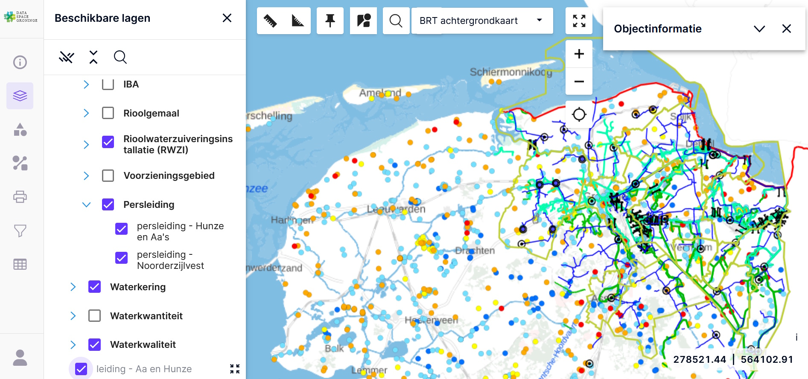

Frankrijk verplicht. Nederland belooft.
Frankrijk haalt Windows van 2,5 miljoen overheidscomputers, van bovenaf en met een deadline. Nederland heeft sinds 2020 hetzelfde beleid op papier, maar de praktijk beweegt de andere kant op.
Lees het nieuwsresultaten fase 1
Sleeswijk-Holstein investeert €9 miljoen in de migratie en verwacht jaarlijks ruim €15 miljoen aan licentiekosten te besparen. Daarmee is de investering in minder dan een jaar terugverdiend. Frankrijk zet 2,5 miljoen ambtenaren over naar Linux. Ook in Nederland komt het op gang: de Rijksuniversiteit Groningen wil in 2030 los zijn van Big Tech en werkt daarbij samen met andere kennisinstellingen in het Noorden.
Wat begon als een zoektocht naar de katalysator om de transitie te versnellen, is in mijn ervaring veranderd. De versnelling is begonnen. Nu gaat het erom dat we 'm praktisch ondersteunen en richting geven. Daar kan Will Switch in helpen: mensen en middelen aan elkaar koppelen, en de echte vragen op tafel krijgen.
In de gesprekken die ik tot nu toe voer, valt me iets op. De voorbeelden die er zijn, Sleeswijk-Holstein bijvoorbeeld, zijn nauwelijks bekend bij Nederlandse gemeenten. En als ik leveranciers spreek, blijkt vaak iets anders dan ik dacht: Big Tech praat met directie en bestuur, terwijl alternatieven het gesprek voeren met IT. Zelfde techniek, totaal andere weg naar een handtekening.
Waar deze inzichten vandaan komen
in binnen- en buitenland, van Sleeswijk-Holstein tot Data Space Groningen.
beweeg mee
Doe mee. Eén klik, geen registratie, geen mailadres. Een teken dat jullie ergens in deze beweging staan.
Voorbeelden die werken, en wat de overstap tegenhoudt.
Frankrijk haalt Windows van 2,5 miljoen overheidscomputers, van bovenaf en met een deadline. Nederland heeft sinds 2020 hetzelfde beleid op papier, maar de praktijk beweegt de andere kant op.
Lees het nieuwsMeta schikt voor 18 miljard dollar en belooft tieners nachtsloten en tijdslimieten. Maar de eindeloze scroll en het verdienmodel blijven staan. Symptoombestrijding, geen structuur.
Lees het nieuwsMecklenburg-Vorpommern vervangt SharePoint door Nextcloud en sluit aan bij buurstaat Sleeswijk-Holstein. Geen los eiland erbij, maar een gedeelde basis.
Lees het nieuwsEen vernietigend advies over vendor lock-in en het ontbreken van een realistische exitstrategie. De grootste IT-organisatie van het Rijk gaat het on-premises-scenario uitwerken.
Lees het nieuwsHet kabinet kiest het meest vergaande scenario: een nieuwe overheidscloud in eigen datacenters, met een technische basis van open source om lock-in te beperken.
Lees het nieuwsTwee grote inkooptrajecten voor onder meer Microsoft en Oracle werden gestaakt. De Kamer vroeg meteen door: waarom een merknaam uitvragen in plaats van functionele eisen?
Lees het nieuwsVierhonderd viewers in de lucht, vijftig echt in gebruik. De grootste valkuil is alles 1-op-1 willen overzetten, inclusief de wildgroei.
Lees het inzichtHet beleid bestaat al sinds 2007: bij gelijke geschiktheid gaat de voorkeur naar open source. De praktijk hapert, vooral door onbekendheid bij inkoop.
Lees het inzichtIn Groningen delen overheden en waterschappen hun data via een federatief, open source platform. Van overheden, door overheden.
Lees de caseDe grootste Duitse deelstaat kiest voor een soevereine, open source werkplek. Reden: dataprivacy, prijsstijgingen en het risico van een kill switch.
Lees het nieuwsDe IT-coöperatie van het hoger onderwijs zette zijn eigen diensten over naar het open source Nextcloud. Niet als test op afstand, maar om leden te laten zien dat het kan.
Lees de case"Het kabinet denkt dat je de hele overheid meteen moet aanpakken. Dat kan niet. Schaal op wat werkt, bij de koplopers van de VNG en de Tweede Kamer zelf."- Barbara Kathmann · Tweede Kamer
„Jetzt können wir auch bei der E-Mail-Kommunikation sagen: Mission erfüllt."- Dirk Schrödterna migratie van Exchange/Outlook naar Open-Xchange en Thunderbird in Sleeswijk-Holstein
De Rijksuniversiteit Groningen wil zich in 2030 hebben losgemaakt van Google, Microsoft, Meta en Amazon. De roadmap ontstond na workshops en gesprekken binnen de eigen organisatie, samen met andere kennisinstellingen in het Noorden.
"We moeten ook een beetje zelfverzekerd zijn."- Rijksuniversiteit Groningen
De Franse Gendarmerie stapte al jaren geleden over op Ubuntu. Geen experiment, maar een organisatie met bijna 100.000 werkplekken. De aanleiding? Meer controle over de eigen digitale omgeving.
"The main goals were to gain greater independence and flexibility."- Franse Gendarmerie
Frankrijk vraagt ministeries actief om afhankelijkheden van niet-Europese technologie terug te dringen. Niet vanuit nostalgie, maar vanuit strategische autonomie.
"Eliminate extra-European digital dependencies."- DINUM · Franse overheid
De Europese Commissie gebruikt open source niet alleen zelf, maar moedigt het ook actief aan binnen de eigen organisatie en bij lidstaten.
"Whenever equivalent functionality can be achieved, open source should be preferred."- Europese Commissie
Een simpele vraag die steeds vaker gesteld wordt: waarom zouden overheden belastinggeld gebruiken om software te financieren die vervolgens niet opnieuw gebruikt mag worden?
"Public money? Public code."- FSFE · campagne binnen Europa
In Zwitserland is open source voor veel nieuwe overheidssoftware geen ambitie meer. Het is vastgelegd in wetgeving.
"Software developed by or for public authorities shall be published as Open Source Software."- Zwitserse EMBAG-wet
"Het veranderde pas toen teammanagers zelf verantwoordelijk werden gemaakt voor de transitie."
Meepraten? Kom dan naar:
Mensen en organisaties die zich openlijk achter de beweging scharen.
Initiatiefnemer
Govert Schoof
Werkt op het snijvlak van overheid, onderzoek, geo-informatie en digitale autonomie.
Nieuws · Frankrijk en Nederland
De Franse digitale dienst DINUM kondigde in april 2026 aan dat 2,5 miljoen overheidscomputers Windows verruilen voor Linux. Het is de grootste vrije-softwaremigratie ooit door een Europese overheid. Elk ministerie moet voor het najaar van 2026 een gedetailleerd migratieplan indienen. Geen aanbeveling, maar een verplichting, van bovenaf en over alle departementen tegelijk.
En het gaat verder dan het besturingssysteem. Ook Teams, Zoom en Dropbox gaan eruit, ten gunste van eigen, op open source gebaseerde alternatieven. Frankrijk en Duitsland bouwden samen al Docs, een alternatief voor Google Docs.
De voor de hand liggende tegenwerping is: en al die Windows-applicaties dan? Dat is precies waar het eerder misging. Duitsland probeerde het met München, jarenlang geroemd, en draaide uiteindelijk terug naar Windows omdat losse applicaties en werkprocessen bleven haken. Frankrijk trekt daar een les uit: niet per stad of per afdeling, maar met een mandaat over de hele linie en een migratieplan per ministerie.
"En al die Windows-applicaties dan?"
Dat de vraag naar de applicaties opduikt, is dus geen argument tegen. Het is het argument voor een aanpak die verder gaat dan het besturingssysteem. Juist ook weg van de afhankelijkheid van al die losse Windows-applicaties, met open source alternatieven, in samenhang aangepakt in plaats van een voor een.
En Nederland? Op papier staan we er hetzelfde in. Sinds 2020 geldt het beleid "open, tenzij": overheidssoftware moet zoveel mogelijk open source zijn. De ambitie is er dus. Maar de praktijk beweegt de andere kant op. De Belastingdienst verhuisde juist zijn mail naar Microsoft 365, en het kabinet erkende in antwoord op Kamervragen dat dit de afhankelijkheid van de Verenigde Staten vergroot. Zoals een analyse het scherp stelde: "open, tenzij" bestaat als principe, maar de praktijk wordt nog steeds gedomineerd door bestaande afhankelijkheden.
Dat is precies de kloof waar dit onderzoek over gaat. Het beleid is er. Het verschil zit in de durf om het ook te doen. Frankrijk liet zien dat een mandaat van bovenaf dat verschil kan maken. De vraag voor Nederland is of we wachten tot de afhankelijkheid ons dwingt, of dat we zelf kiezen zolang het nog kan.
Nieuws · Verenigde Staten
Meta trof eind augustus 2026 een schikking met een brede coalitie van Amerikaanse staten, na een rechtszaak over de vraag of Facebook en Instagram bewust verslavend zijn ontworpen voor minderjarigen. Het bedrijf betaalt ongeveer 18 miljard dollar, uit te keren over tien jaar, en voert een reeks beschermingsmaatregelen voor tieners in.
Op papier zien die er serieus uit. Een tijdslimiet van standaard twee uur per dag over beide apps, alleen op te heffen met toestemming van een ouder. Een nachtmodus tussen middernacht en zes uur waarin niets te posten of te bekijken valt. Geen meldingen tijdens schooltijd. En de mogelijkheid om te kiezen voor een feed zonder algoritme, autoplay uit te zetten en likes te verbergen.
Maar kijk naar wat er niet verandert. De eindeloze scroll blijft. De niet-gepersonaliseerde feed is een keuze die je zelf moet aanzetten, geen standaard. Het algoritme dat op betrokkenheid stuurt, de kern van het verdienmodel, blijft precies zoals het was.
"De eindeloze scroll, het kloppend hart van elk verslavend platform, blijft gewoon bestaan."
Nog veelzeggender is de constructie eromheen. Een deel van het geld komt pas vrij als TikTok en YouTube dezelfde maatregelen invoeren. Meta zet zijn eigen schikking om in een drukmiddel voor de rest van de sector, met als argument dat beperkingen op één platform weinig uithalen zolang gebruikers kunnen uitwijken naar een ander.
En daar zit precies de les die deze beweging raakt. Een tiener kan niet weg bij Instagram, dus voor hem zijn dit de enige knoppen die er zijn. Maar afhankelijkheid los je niet op aan de symptoomkant, met een nachtslot of een tijdslimiet. Je lost het op aan de structuur, door te zorgen dat je niet volledig van één partij afhankelijk bent. Dat is wat een tiener niet kan, maar een overheid wel. De vraag is niet of Big Tech zich netjes gedraagt. De vraag is of je nog weg kunt als dat niet zo is.
Nieuws · Duitsland
De Duitse deelstaat Mecklenburg-Vorpommern vervangt Microsoft SharePoint door het open source Nextcloud als samenwerkingsplatform voor de hele deelstaat. Op termijn moeten ruim 50.000 medewerkers van deelstaat en gemeenten ermee werken. Het beheer ligt bij de eigen IT-dienstverlener van de deelstaat, op eigen infrastructuur en onder eigen controle.
Het opvallendste is niet de techniek, maar de samenwerking. In november 2025 tekende het ministerie al een overeenkomst met de staatskanselarij van Sleeswijk-Holstein, de Duitse koploper die eveneens op Nextcloud draait. Daarmee ontstaat tussen twee overheden iets zeldzaams: een gedeelde soevereine basis in plaats van weer een losse oplossing erbij.
"Allianties zijn cruciaal om open source de norm te maken."
Dat raakt een echt probleem. De Europese soevereiniteitsbeweging kent vooral geïsoleerde successen: Nextcloud in Oostenrijk, LibreOffice in Sleeswijk-Holstein, OpenStack in Frankrijk. Stuk voor stuk bewijzen ze dat het kan, maar elk eiland koos zijn eigen oplossing, waardoor de schaal en het netwerkeffect van de grote aanbieders buiten bereik bleven.
De uitrol staat niet op zichzelf: de deelstaat gebruikt ook OpenProject en ontwikkelde een eigen, lokaal beheerde AI-assistent op basis van OpenWebUI. En eerlijk over het tempo: de ambitie is 50.000 medewerkers, in de praktijk werken er nu zo'n 5.000 mee, voorlopig vooral voor het delen van bestanden. De Windows-werkplekken blijven voorlopig gewoon staan.
Dat laatste is geen zwakte van het verhaal, maar de kern ervan. Het gaat niet om uit principe elk commercieel product vervangen, maar om kritieke afhankelijkheden verminderen, juist daar waar bestuur, communicatie en gevoelige data samenkomen.
Nieuws · Rijksoverheid
In juli 2026 kreeg de Belastingdienst een hard oordeel van het Adviescollege ICT-toetsing over de uitrol van Microsoft 365. De conclusie: deze aanpak leidt niet tot een werkbare, veilige en toekomstvaste digitale werkomgeving. Het advies is om de uitrol in de publieke cloud terug te draaien en uiterlijk eind 2026 te kiezen voor een ander groeipad.
De kern van de kritiek raakt precies waar deze beweging om draait. Door te kiezen voor één allesomvattende oplossing zonder realistische exitstrategie manoeuvreert de organisatie zichzelf in een vendor lock-in, met grotere concentratierisico's en minder flexibiliteit en digitale soevereiniteit.
Het exit-plan leunde op een back-upvoorziening van een Amerikaanse leverancier, bedoeld voor het scenario waarin de dienstverlening plotseling wegvalt door bijvoorbeeld geopolitieke ontwikkelingen of sancties. Maar in zo'n situatie is de kans groot dat ook andere leveranciers stoppen. Bovendien werkt die back-upoplossing voor de eigen beheerders als een black box: herstel kan alleen via de standaardinterfaces, en valt die ondersteuning weg, dan is herstel misschien niet meer mogelijk.
"Een allesomvattende oplossing zonder realistische exitstrategie."
De staatssecretaris zette het programma stil en laat eerst het on-premises-scenario uitwerken, waarbij de software op eigen of eigen beheerde servers draait. Ook Douane en Toeslagen krijgen met die pauze te maken. De eerdere keuze werd verdedigd als destijds de enige realistische optie, met de kanttekening dat omstandigheden zoals beschikbare datacentercapaciteit en marktaanbod in een jaar tijd kunnen veranderen.
Dat is misschien wel de bruikbaarste les: wat vorig jaar onhaalbaar leek, kan dit jaar wel kunnen. Een afweging die je één keer maakt, is geen afweging voor altijd.
Nieuws · Rijksoverheid
Het kabinet koos in juli 2026 voor een soevereine overheidscloud onder centrale regie, waar mogelijk ondergebracht in de eigen datacenters van het Rijk. Van de onderzochte scenario's werd het meest vergaande gekozen: een volledig nieuwe cloud die los van de bestaande systemen wordt opgebouwd. Volgens de betrokken adviseurs is dat ook de meest kansrijke route.
Maximale soevereiniteit betekent hier dat de overheid praktisch en juridisch beschikt over de hardware, de fysieke toegang en de locatie. Technologie en exploitatie komen volledig onder EU-regels te vallen, zonder kritieke afhankelijkheden van landen daarbuiten. Nederland mikt daarmee op de hoogste categorie uit het Europese soevereiniteitsraamwerk.
Voor deze beweging is één detail het belangrijkst: om leveranciersafhankelijkheid te beperken wordt de technische basis op open source gebouwd, met een containerplatform volgens de Haven-standaard. Open source is hier dus geen ideologische keuze, maar het middel om lock-in te voorkomen.
"De huidige situatie rond cloudtechnologie is niet langer houdbaar."
De schaal van de opgave blijkt uit de verkenning zelf: de drie grote Amerikaanse aanbieders hebben samen zo'n zeventig procent van de Europese cloudmarkt, terwijl Europese aanbieders elk rond de twee procent zitten. De eerste applicaties zouden eind 2026 op de nieuwe omgeving moeten draaien. Het ontwerp gaat openbaar in consultatie, en zonder voorfinanciering wordt de transitie complexer en langduriger.
Nieuws · Aanbestedingsrecht
Begin 2026 werden twee grote IT-aanbestedingen van de rijksoverheid door de rechter stilgelegd, samen goed voor maximaal 3,3 miljard euro over vier jaar. Het ging om standaardsoftware, onder meer van Microsoft en Oracle, voor ministeries, de Raad voor de Rechtspraak, Defensie en andere overheidsorganisaties. De zaak was aangespannen door resellers.
De rechter oordeelde dat het sublicentiemodel en de voorwaarde dat resellers de financiële risico's voor datalekken en privacyschendingen dragen disproportioneel zijn en de marktwerking verstoren.
Interessanter voor deze beweging is wat er daarna in de Tweede Kamer gebeurde. Kamerleden vroegen of deze aanbestedingen de digitale autonomie van Nederland vergroten of juist verkleinen, hoe je die afhankelijkheid nog kunt afbouwen als je de inkoopvoorwaarden jarenlang vastlegt in een raamovereenkomst, en waarom er wordt gevraagd om levering van software van een specifieke leverancier in plaats van om de technische eisen waaraan die software moet voldoen.
"Waarom vraagt u om een merknaam in plaats van technische eisen?"
Dat is precies het voorsorteren waar open source in de inkoop op stukloopt. Het antwoord vanuit het Rijk was dat niet alleen Microsoft of Oracle aan de eisen kunnen voldoen, en dat productgericht uitvragen is toegestaan waar de Aanbestedingswet een uitzondering biedt. De aanbestedingen worden voortgezet nadat de voorwaarden zijn aangepast.
Hoe dat voorsorteren werkt, en wat je ertegen kunt doen, staat in het inzicht over open source en aanbesteden.
Inzicht · Uit de praktijk
Kan het echt, minder Big Tech? Ja. De software is er, en de businesscase is in veel gevallen al positief. Het vraagt wel een fundamentele omslag: je betaalt niet langer met licentiegeld, maar investeert in eigen expertise.
De grootste valkuil zit aan het begin. Organisaties willen alles 1-op-1 overzetten, en dat kost onnodig veel tijd en kennis. Moet je vierhonderd viewers migreren als er wekelijks maar vijftig echt gebruikt worden? Die inventarisatie is ongemakkelijk, maar je hebt hem sowieso nodig, ook als je helemaal niet migreert.
"Je moet kritisch naar je huidige wildgroei durven kijken."
De tweede bottleneck zit bij het management. De transitie kost tijd, kennis en energie, terwijl de directe winst vooraf laag lijkt: waarom overstappen als je er straks hetzelfde of net iets minder voor terugkrijgt? Zo blijven de risico's op korte termijn zwaarder wegen dan de strategische kansen op lange termijn.
Wat trekt organisaties dan wel over de streep? Inzicht in wat het op lange termijn oplevert, waardoor de angst voor het onbekende afneemt. Zodra de focus verschuift van brandjes blussen naar grip op je eigen data en strategische onafhankelijkheid, ontstaat er ruimte.
En misschien wel het krachtigste: praten met een organisatie die het al heeft gedaan. Pioniers in het geo-vakgebied zoals de provincie Zeeland en Hoogheemraadschap Rijnland zijn open over hun proces en trots op het resultaat. Dat enthousiasme neemt de koudwatervrees bij anderen effectief weg.
Met dank aan Jorn Habes voor het gesprek.
Inzicht · Aanbestedingsrecht
Wie open source wil, strandt vaak bij de inkoop. Niet omdat het niet mag, maar omdat bestekken direct of indirect voorsorteren op een gesloten product. Een voorbeeld dat tot Kamervragen leidde: een aanbesteding die eist dat de leverancier trainingen in een specifiek videobelproduct kan geven. Dat klinkt als een neutrale eis, maar sluit alternatieven feitelijk uit.
Er zijn twee routes eromheen. De eerste: besteed het product niet aan. Open source software kun je gewoon downloaden. Sorteer daarop voor en besteed vervolgens de dienstverlening eromheen aan: implementatie, beheer, ondersteuning.
De tweede route: volg de wet, want die is er al. Sinds 2007 geldt in Nederland dat bij gelijke geschiktheid de voorkeur naar open source gaat. Kun je met de software hetzelfde bereiken, dan levert open source dus extra punten op. Recenter is het beleid "open, tenzij", vooral voor maatwerk: broncode valt onder de open overheid en moet opvraagbaar zijn, met uitzonderingen zoals staatsveiligheid.
"Bij gelijke geschiktheid gaat de voorkeur naar open source."
Het beleid is dus op orde. De praktijk is anders, en vaak simpelweg omdat inkoop er niet van op de hoogte is. Twee hardnekkige fabels helpen daarbij niet. "Wij willen gesloten software, dan kunnen we iemand verantwoordelijk houden": dat kan met open source net zo goed, via de dienstverlener. En eisen als een minimale omzet of honderd medewerkers: die mogen alleen als ze samenhangen met de opdracht en aantoonbaar noodzakelijk zijn.
Wat kan een leverancier doen? Zie je in een bestek dat er op gesloten producten of koppelingen wordt gestuurd, stel dan de vraag in de nota van inlichtingen: voldoet dit aan het aanbestedingsrecht? Die ene vraag dwingt zorgvuldigheid af. En dit speelt bij meer inkoop dan je denkt: nationale drempels beginnen vaak al rond de 30.000 euro, Europese rond de twee ton.
Aantekeningen van de sessie over aanbesteden op FOSS4G NL in Groningen, met dank aan Mathieu Paapst (Rijksuniversiteit Groningen).
Praktijk · Regionale overheden
Data Space Groningen (DSG) is een federatief samenwerkingsverband van overheden en semi-overheden in Groningen, die maatschappelijke vraagstukken samen aanpakken met data. Het grootste misverstand: DSG is geen leverancier. De deelnemers zijn samen eigenaar en vormen een community die elkaars data deelt, verrijkt en er kennis uit haalt.

Het begon in 2015, toen de Nationaal Coördinator Groningen vroeg om een dataplatform voor aardbevingen. Waterschap Hunze en Aa's, gemeente Groningen, provincie Groningen en gemeente Delfzijl namen samen met Geon het initiatief voor het Gegevens Knooppunt Groningen. In 2024 kreeg het onder de nieuwe naam Data Space Groningen een vervolg: vijftien overheden en twee kennisinstellingen zeiden ja, gedreven door de wens om datagestuurd te werken.
De kern draait bewust op open source en open standaarden (GeoServer, WFS, WMS), om zo onafhankelijk mogelijk te zijn. Die onafhankelijkheid zit ook in het beheer, dat op elk moment overdraagbaar is. Alles draait geïsoleerd via Docker op een server bij de RUG, en de inrichting dient als sjabloon voor soortgelijke initiatieven elders. Waar een bronhouder alleen propriëtair kan aanleveren, wordt daar een tijdelijke tussenstap voor gemaakt.
"Van overheden, door overheden."
Eerlijk over de obstakels: in het begin bouw je aan netwerkinfrastructuur zonder tastbaar resultaat, en lever je soms data aan producten waar je zelf niet meteen iets aan hebt. Dan wordt de meerwaarde van samenwerken niet gelijk gezien, en haken organisaties soms af. Corona bracht het initiatief in de problemen toen gezamenlijk overleg wegviel. Het kantelpunt kwam toen het voormalige knooppunt dreigde om te vallen: niemand wilde de stekker eruit trekken.
Waarom federatief? Omdat bronhouders eigenaar blijven van hun eigen data, met duidelijkheid over eigenaarschap en regie. Het is het model van de basisregistraties, waarin elke organisatie zijn eigen gegevens onderhoudt en delen een gezamenlijk belang is. En de onafhankelijke positie is voor DSG juist wat het legitiem maakt: een grote overheidspartij heeft vaak een eigen belang, en is daardoor minder neutraal.
Wat het oplevert? Neem de waterketenkaart: veertien gemeenten, twee waterschappen en twee waterbedrijven in één gebiedsdekkende kaart. Door volgens gedeelde standaarden te werken maakte vooral de datakwaliteit een sprong, en werd data bruikbaar over gebiedsgrenzen heen. De les voor wie nog twijfelt: data hoeft niet perfect te zijn om gedeeld te worden. Juist door te delen en samen afspraken te maken wordt ze beter.
Data Space Groningen deelt zijn aanpak bewust als sjabloon. Overweeg je hier zelf mee te beginnen, dan ligt er dus een uitgewerkt voorbeeld om van te leren.
Met dank aan Bert, Jetske en Harm van Geon bv voor het gesprek. Meer weten of aansluiten? Kijk op dataspacegroningen.nl.
Nieuws · Duitsland
Bavaria, de grootste Duitse deelstaat, heeft in juni 2026 een raamcontract van bijna een miljard euro met Microsoft geannuleerd. In plaats daarvan komt er een soevereine basiswerkplek op basis van open source componenten. Het contract zou over vijf jaar bijna een miljard euro hebben gekost.
Digitaal minister Fabian Mehring noemt drie redenen: bescherming tegen prijsstijgingen, grip op dataprivacy, en de zekerheid dat diensten ook in een crisis blijven werken. Dat laatste raakt precies het scenario waar deze beweging om draait: het risico dat toegang tot je eigen systemen afhangt van een beslissing elders. Een kill switch.
Daarmee volgt Bavaria het spoor van Sleeswijk-Holstein, dat al zo'n 80 procent van zijn werkplekken naar open source bracht. De keuze kwam er na een maandenlange richtingenstrijd tussen het ministerie van Financiën, dat kortingen bij Microsoft wilde, en het digitale ministerie, dat voor open source koos.
Praktijk · Hoger onderwijs
SURF, de IT-coöperatie voor het hoger onderwijs en onderzoek, rolt het open source samenwerkingsplatform Nextcloud breed uit. Vanaf januari 2026 kunnen instellingen meedoen. Het bijzondere zit in hoe SURF het aanpakt: de organisatie test het niet op afstand, ze gebruikt het zelf.
De eigen opslagdiensten SURFdrive en Research Drive, samen goed voor zo'n 100.000 gebruikers en sinds 2014 in de lucht, draaien inmiddels volledig op Nextcloud. De eigen collega's zijn de proefkonijnen. De redenering is simpel: als wij het zelf niet aandurven, hoe kunnen we leden dan adviseren om over te stappen?
De drijfveer is niet anti-Amerikaans, maar keuzevrijheid. SURF wil niet afhankelijk zijn van één partij en spreidt risico's bewust, tot aan de keuze van software toe.
"Keuzevrijheid is belangrijker dan niet-Amerikaans."
En misschien wel het meest herkenbaar voor deze beweging: de grootste drempel is niet techniek, maar cultuur. SURF noemt het een "calimerocomplex", het idee dat je als sector toch niet kunt opboksen tegen de miljarden van Google of Microsoft. Volgens SURF is dat vooral een kwestie van zelfvertrouwen, en van mouwen opstropen en beginnen.
Open source betekent hier niet automatisch goedkoper: SURF betaalt voor ondersteuning, draagt zelf bij aan het Nextcloud-project, en de migratie kostte twee jaar. Wat het oplevert is grip, vertrouwen en de mogelijkheid om via open standaarden met andere partijen samen te werken.